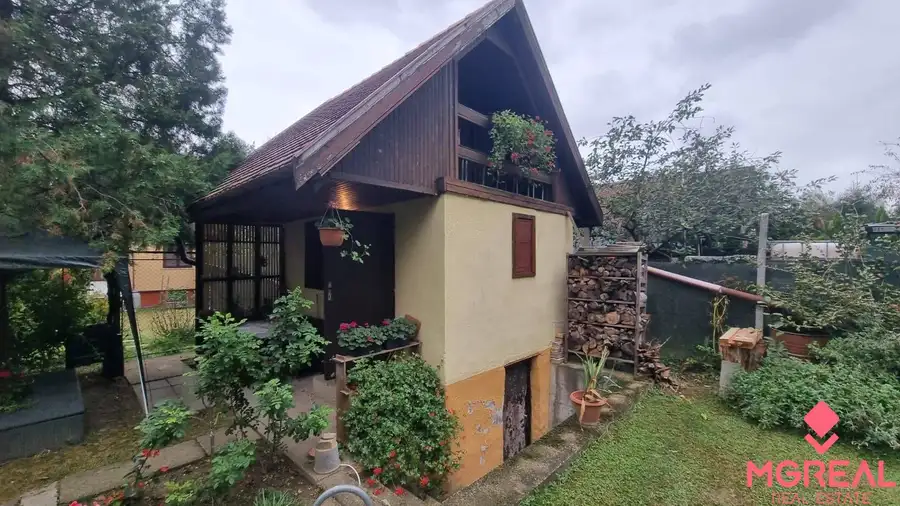
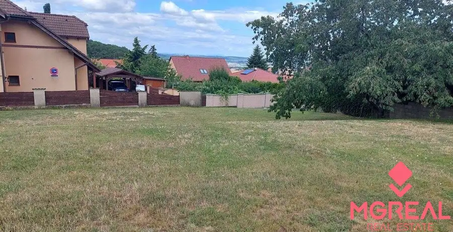
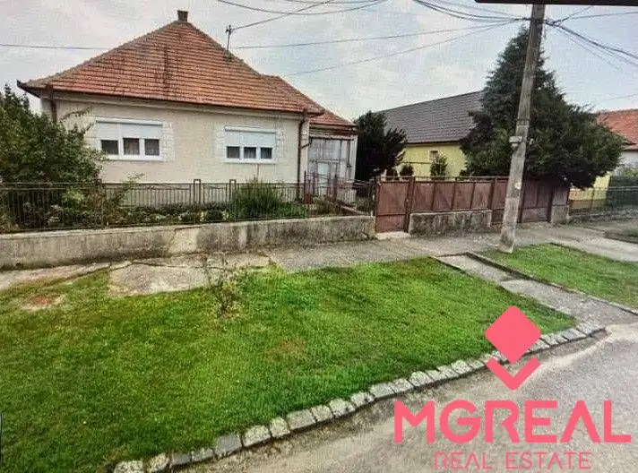

3 izbový byt Nitra - centrum
Nitra
- Dispozícia3-izbový
- Plocha68 m²
- Poschodie5. z 6
- Stavčiastočne prerobený
- Vlastníctvoosobné
O nehnuteľnosti
Ponúkame Vám na predaj 3 izbový byt v centre Nitry na Štúrovej ulici. Byt sa nachádza na 5/6 poschodí v kompletne zrekonštruovanom bytovom dome, kde sú vymenené stupačky, zateplená fasáda, vynovený interiér spoločných priestorov domu a nový výťah.
Dispozícia: vstupná chodbička z ktorej je vstup do detskej izby, chodba, kúpeľňa s vaňou, samostatné WC, kuchyňa, obývačka so vstupom do spálne. V obývačke je balkón a v detskej izbe loggia. Podlahy v izbách a v kuchyni sú plávajúce podlahy, na chodbe je plávajúca podlaha a vo vstupnej chodbičke je dlažba. Na stenách sú stierky, okná sú plastové, kúpeľňa aj WC sú prerobené.
Štúrova ulica je veľmi dobrou lokalitou s pešou dostupnosťou do centra. V pešej dostupnosti je kompletná občianska vybavenosť, MŠ, ZŠ, gymnázium, potraviny, MHD, nákupné centrum, detské ihrisko a rozsiahly mestský park a kúpalisko. V okolí domu je dostatok parkovacích miest. Ponuka bývania v tomto byte je ideálnou voľbou pre tých, ktorí hľadajú bezstarostné bývanie s kompletnou občianskou vybavenosťou.
V cene sú zahrnuté komplexné právne služby, správne poplatky na katastri a poplatky za overenie podpisov u notára. V prípade záujmu poskytneme rýchle a nezávislé poradenstvo v oblasti financovania kúpy a získanie najvýhodnejších podmienok pre hypotekárny úver podľa podmienok kupujúceho.
Parametre
| Úžitková plocha | 68 m² |
|---|---|
| Poschodie | 5 |
| Počet poschodí | 6 |
| Počet izieb | 3 |
| Vlastníctvo | osobné |
| Stav | čiastočne prerobený |
| El. napätie | nie |
| Plyn | nie |
| Kúpeľňa | vaňa |
| Vykurovanie | áno |
| Balkón | áno |
| Lódžia | áno |
| Terasa | nie |
| Pivnica | nie |
| Garáž | nie |
| Výťah | áno |
| Postavené z | panel |
| Krb | nie |
| Klimatizácia | nie |
| Káblová televízia | nie |
| Energetický certifikát | nie |
| Predzáhradka | nie |
| Bezbariérový prístup | áno |
| Okná | plastové |
| Dátum zverejnenia | 7. 9. 2025 |
Kde to je
Mohlo by Vás zaujímať

Chaty a chalupy10 57 000 €Chata so záhradou Kráľová nad Váhom Kráľová nad Váhom 17 m² Ponúkame Vám na predaj chatku so záhradou v obci Kráľova nad Váhom. Murovaná chatka o rozlohe 17m2 je umiestnená na slnečnom a rovinatom pozemku o…
Pozemok2 149 500 €Stavebný pozemok Nitra Zobor Nitra 600 m² Ponúkame Vám na predaj stavebný pozemok v Nitre na Zobore. Pozemok má rozlohu 600m2 a je mierne svahovitý, Šírka pozemku 24 m umožňuje bezproblémové…
Rodinné domy 170 000 €Rodinný dom Komjatice Komjatice 124 m² Ponúkame Vám na predaj rodinný dom v centre obce Komjatice. Dom sa nachádza na pozemku o rozlohe 1166m2. Zastavaná plocha domu je 140m2. V dome sa…